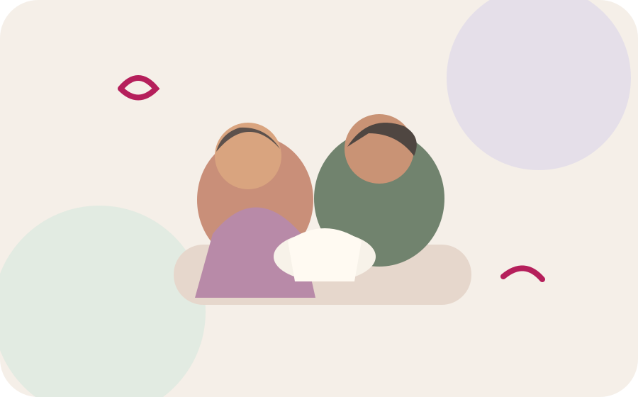

Association née au cœur de la néonatologie du CHU de Bordeaux
Chaque petit pas
compte.
Soutenir les tout-petits, leurs parents et celles et ceux qui les accompagnent.
À p'tits pas agit pour améliorer le quotidien des nouveau-nés hospitalisés en néonatologie, soutenir leurs familles et accompagner les professionnels au plus près du terrain.

Actualités
Les nouvelles de l'association.
Les derniers projets, événements et réalisations d'À p'tits pas.

Mai 2026
Marché de printemps 2026
Plus de 1 000 € récoltés lors de cette première édition.
Voir le projet →
Projet réalisé
La salle des parents du 4N rénovée
7 000 € investis pour améliorer l'accueil et le confort des familles.
Voir le projet →
Projet réalisé
Des fauteuils d'allaitement pour le 4N et le 4B
Un équipement pensé pour favoriser le confort et le lien parent-bébé.
Voir le projet →La néonatologie en quelques chiffres
et paramédicaux
chaque année
pris en charge
soins intensifs
Nos missions
Trois missions, clairement visibles.
Soins de développement
Contribuer à un environnement attentif au rythme, au confort et au développement du nouveau-né.
02Parentalité & lien parent-bébé
Soutenir la place des parents et améliorer le vécu de l'hospitalisation.
03Formation des professionnels
Encourager la transmission, la formation continue et le développement des compétences.
Nos quatre axes
Une action au plus près du terrain.


Actions concrètes
Des projets que vous pouvez découvrir.
Soutenir l'association